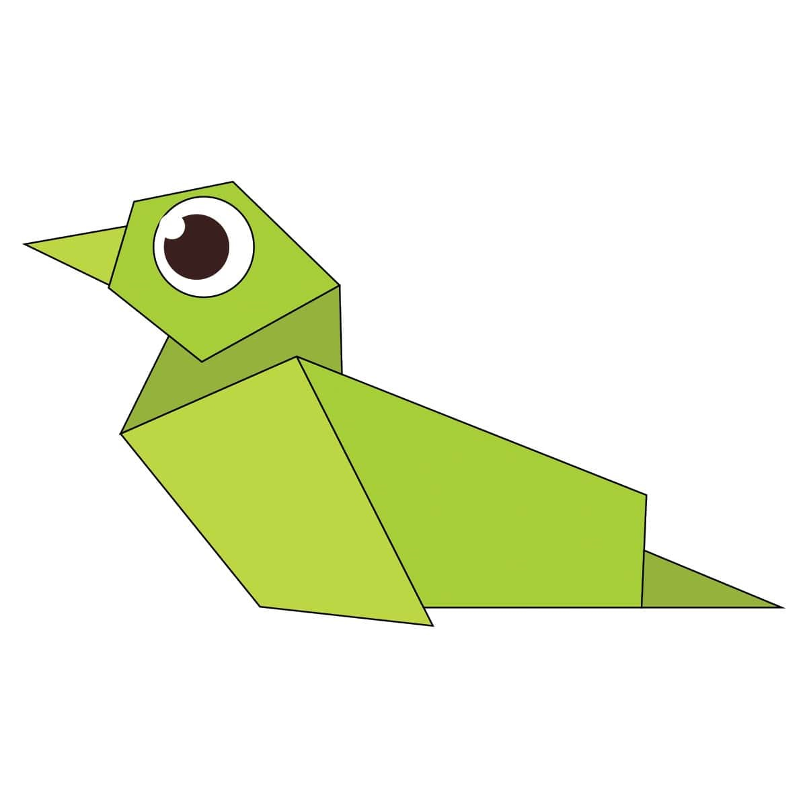
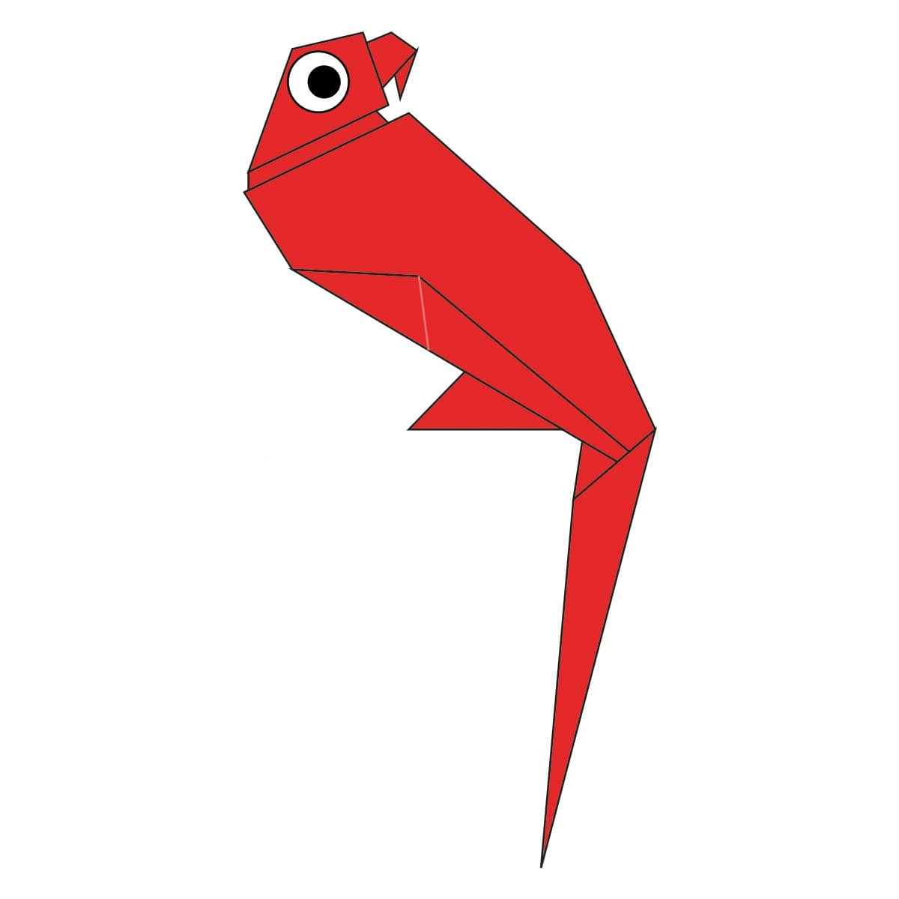
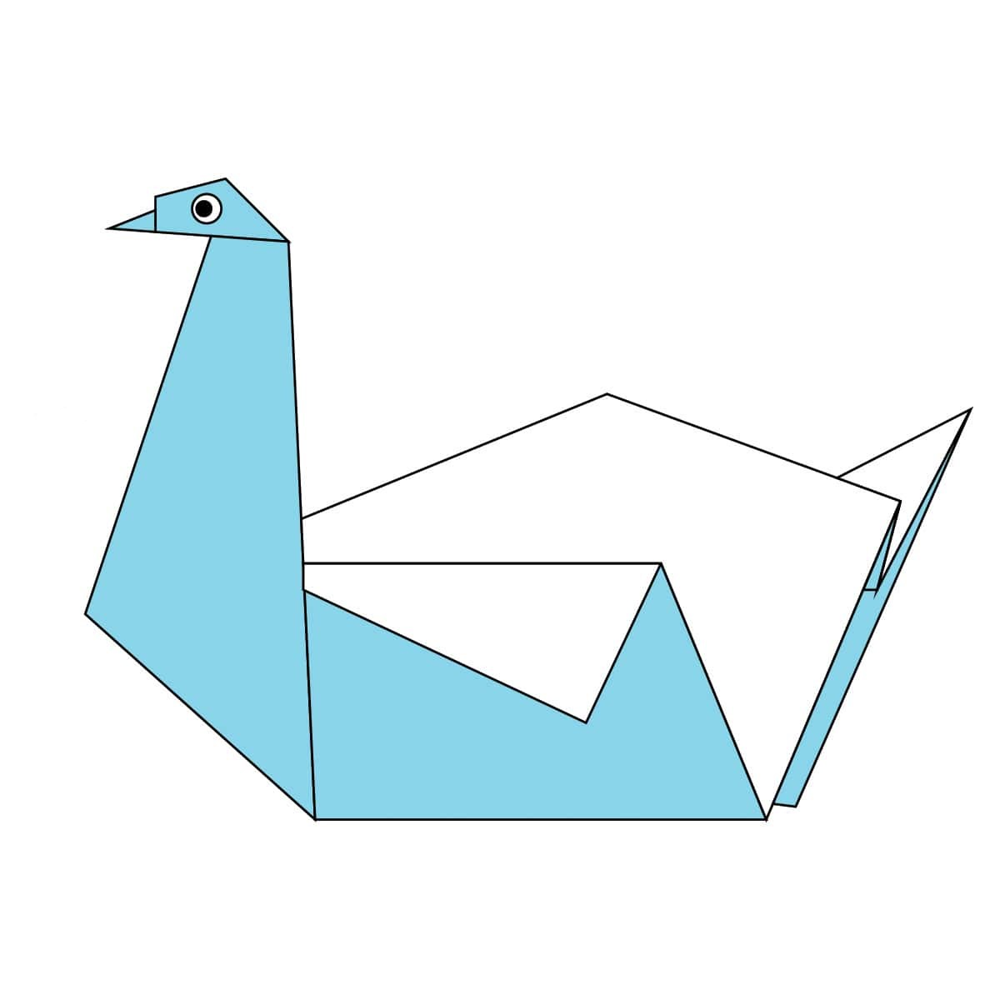
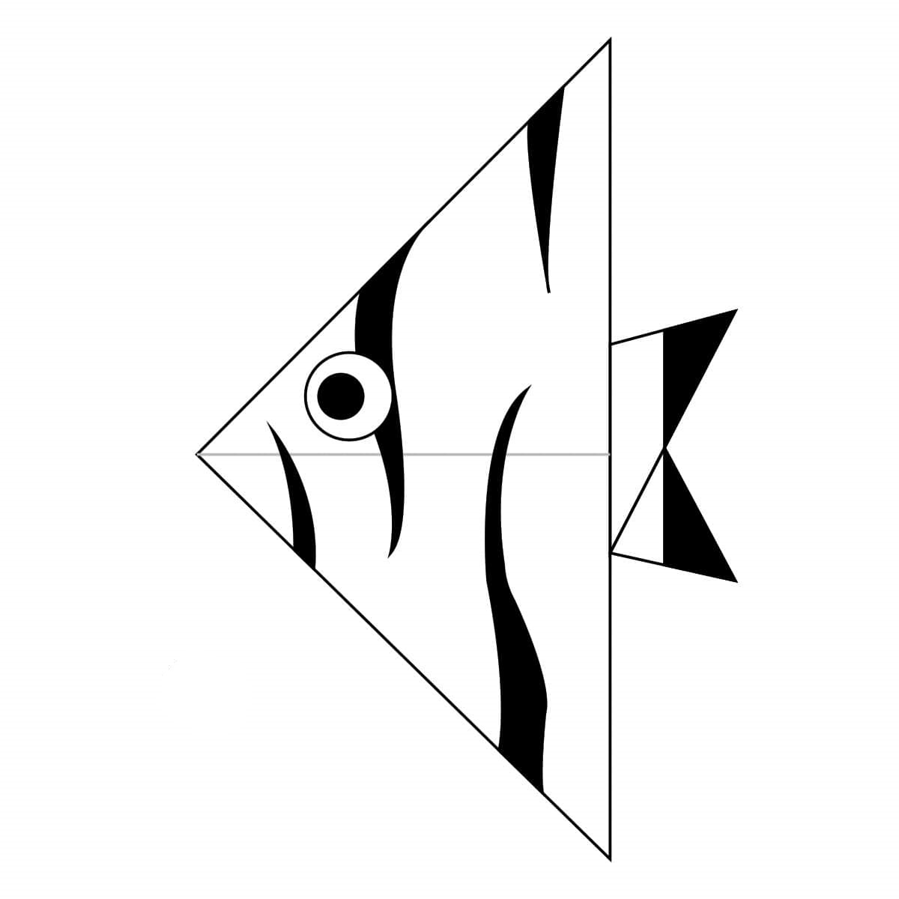
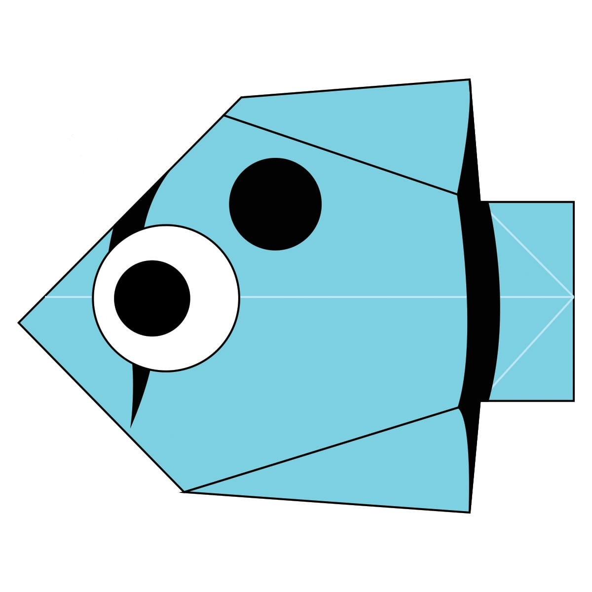
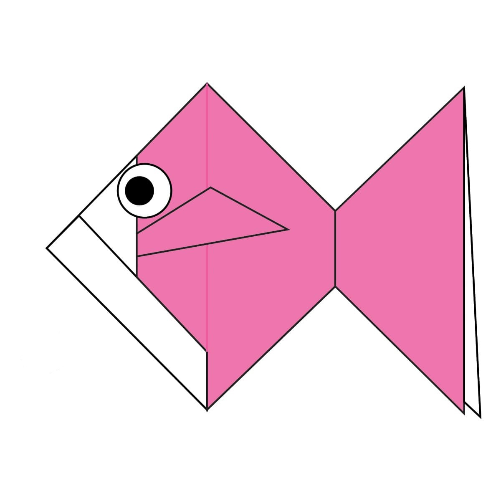
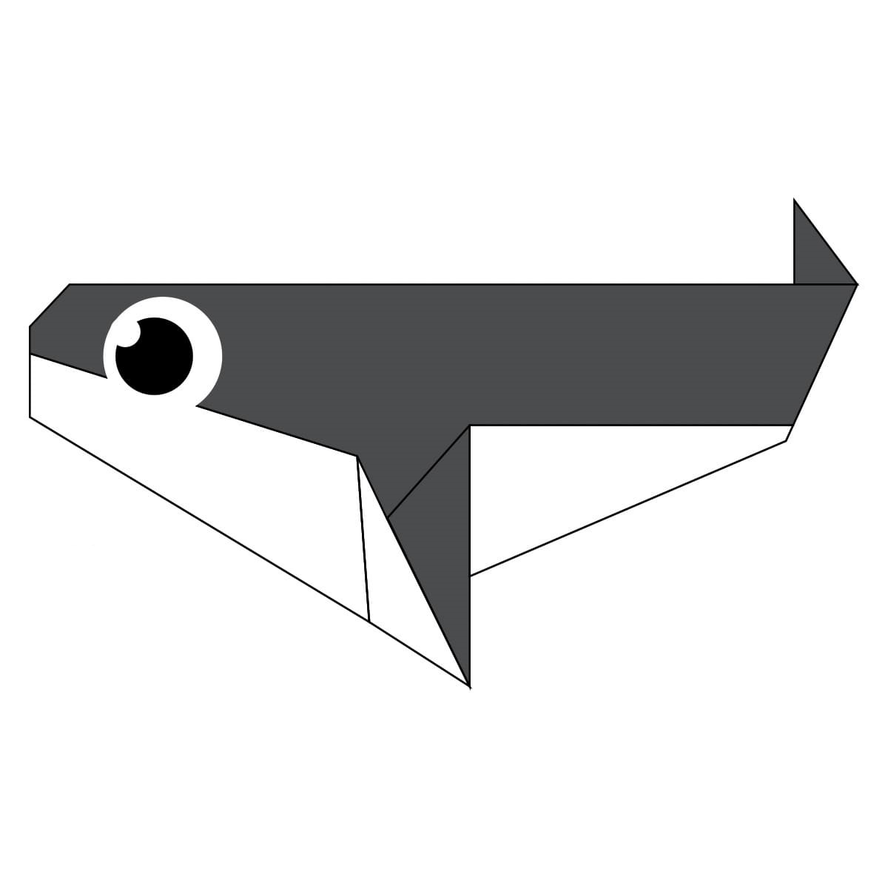
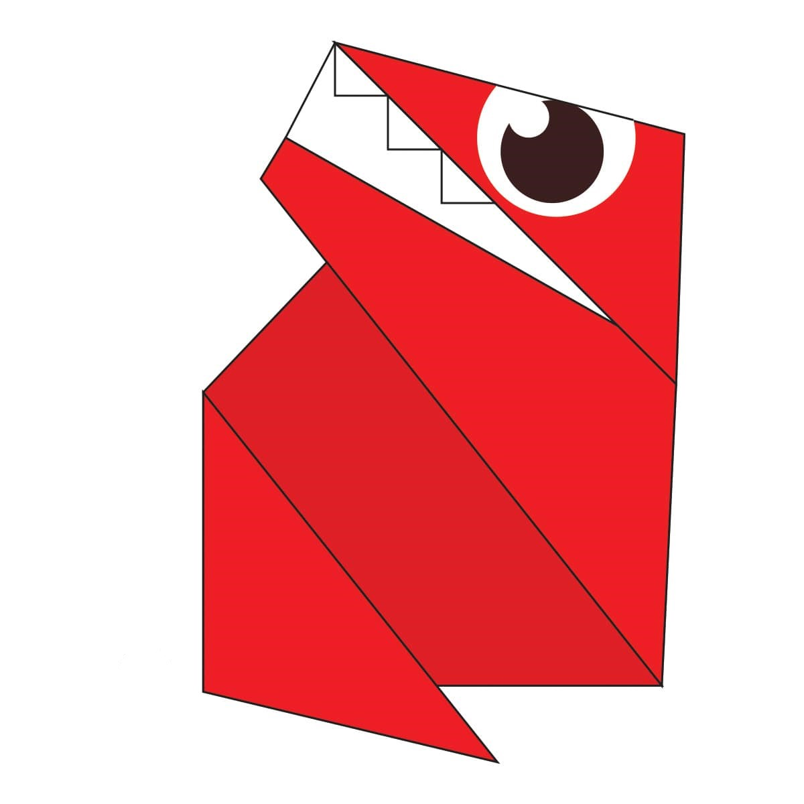

Origami Designs
About Us
Follow Us
Animals

Interesting Facts about Camel
- Camel's ears are furry
- Camel can move easily across the sand because of its specially desigened feet
- When they find water, they will drink as much as possible.

Interesting Facts about Chameleon
- Chameleon are reptiles that are part of the iguana suborder
- Changing skin color is an important part of comunication among chameleons
- Most chameleons have a prehensile tail that they use to warp around tree branches

Interesting Facts about Panda
- A giant panda is much bigger than your teddy bear
- Giant pandas are good at climbing trees and can also swim
- Pandas have carnivorous teeth, but they eat bamboo and fruit.

Interesting Facts about Teddy-Bear
- Bears are extraordinarily intelligent animals
- Bears have excellent senses of smell, sight and hearing
- Bears care deeply about family members.
Birds

Interesting Facts about Duck
- A male duck is called a drake, a female duck a hen, and a baby duck a duckling
- Ducks are mostly aquatic birds living in both fresh water and sea water
- Ducks are omnivores.

Interesting Facts about Parrot
- Parrots are often brightly coloured
- Parrots are believed to be one of the most intelligent bird species
- Most parrots live in tropical areas.

Interesting Facts about Pigeon
- Pigeons are incredibly complex and intelligent animals
- Pigeons are renowned for their outstanding navigational abilities
- Pigeons have excellent hearing abilities.

Interesting Facts about Swan
- Swans are very territorial during mating season
- Swans have their own constellation
- Swans live for a long time.
Fish and Sea Creatures

Interesting Facts about Angelfish
- Angelfish Are Omnivores
- Angelfish Lay Eggs in Egg Layers
- Angelfish Can Grow to Nearly Ten Inches.

Interesting Facts about Butterfly-Fish
- Baby butterfly fish are called 'fry'
- When butterfly fish spawn, their eggs become part of the plankton
- Butterfly Fish can live for 5 to 10 years.

Interesting Facts about Goldfish
- The goldfish is the most popular aquarium fish in the world
- Goldfish actually see more colors than humans
- Goldfish have a sixth sense.

Interesting Facts about Killer-Whale
- Killer whales also called 'orcas', are the largest of the dolphins
- Killer whales can weigh up to six tons
- Killer whales can grow to be 23 to 32 feet long, almost as long as a bus.
Dinosaurs and Prehistoric Creatures

Interesting Facts about T-rex
- T-rex is also known as Tyrannosaurus Rex
- The Tyrannosaurus had a life span of around 30 years
- Tyrannosaurus is from the Greek word meaning Tyrant Lizard.
Insects

Interesting Facts about Flying-Cicada
- Cicadas are the elders of the insect world
- Cicadas can survive a huge fall as babies, or nymphs
- Most have red-orange eyes.